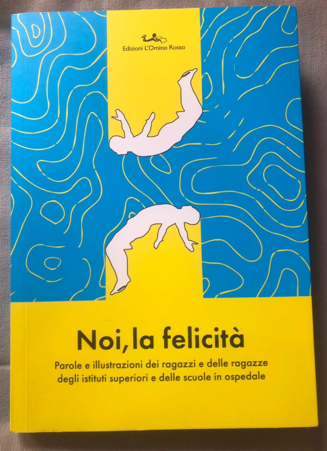

Ultimo post
Noi, la felicità
Noi, la felicità: un libro che nasce da un altro, un viaggio che parte dalle voci più timide e incerte, sviluppandosi e concludendosi con quelle ormai compiute, “fiorite”. Una raccolta di testi e illustrazioni dei ragazzi delle scuole superiori e delle scuole in ospedale del Friuli e non solo, uniti nella ricerca della soggettiva definizione di “felicità”. Il libro trae origine da quello di Marco Balzano “Cosa c'entra la felicità”, presentato anch'esso a pordenonelegge.it questo settembre. ~@carolinarusso__
Progetto realizzato dall'istituto Federico Flora di Pordenone e Area Giovani Cro di Aviano.